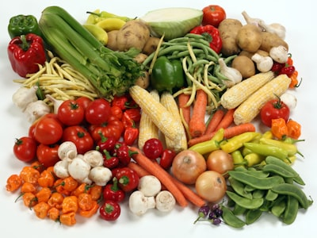

Mẹo hay
10 mẹo bảo quản rau củ tươi lâu hơn mà không cần tủ lạnh
Một số loại rau củ chỉ cần bảo quản đúng cách ở nhiệt độ phòng là có thể tươi ngon đến 1 tuần. Đây là những mẹo đơn giản mà bạn có thể áp dụng ngay.
15/06/2026